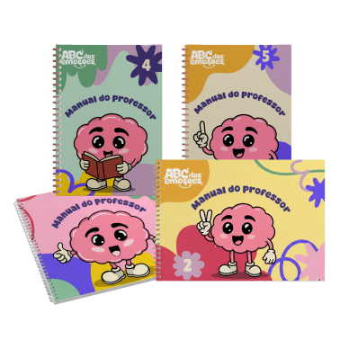

Para Escolas e famílias
A escola também conta com capacitações e treinamentos para a equipe pedagógica e encontros de educação parental com as famílias, promovendo um ambiente de cuidado integral.


Material didático lúdico e encantador, baseado na BNCC e nos pilares da Unesco. Com princípios e valores cristãos, para apoiar crianças, educadores e famílias.
Oferecemos um portfólio das emoções, um jogo pedagógico divertido, brindes surpresa e uma pasta personalizada para guardar todo o material didático.



A educadora recebe um manual completo e descomplicado, com o passo a passo de cada encontro, orientações práticas, recursos lúdicos, lista dos materiais necessários por encontro e sugestões de condução, tudo pronto para aplicar com segurança.
A escola também conta com capacitações e treinamentos para a equipe pedagógica e encontros de educação parental com as famílias, promovendo um ambiente de cuidado integral.